< < < Back
13 Reasons Why Fighters In The East Are More Successful Than Fighters In The West – Return Of Kings
What do you mean “Fighters In The East Are More Successful Than Fighters In The West”? And ever heard of Georges Saint-Pierre, Randy Couture or Conor McGregor, you arrogant French bastard? Settle down, Johnny Texas. We will speak not about what makes champions, but mainly what makes the average “Eastern” fighter knock people unconscious more often than his “Western” counterpart.
For the nations that I describe as “Eastern” and “Western”:
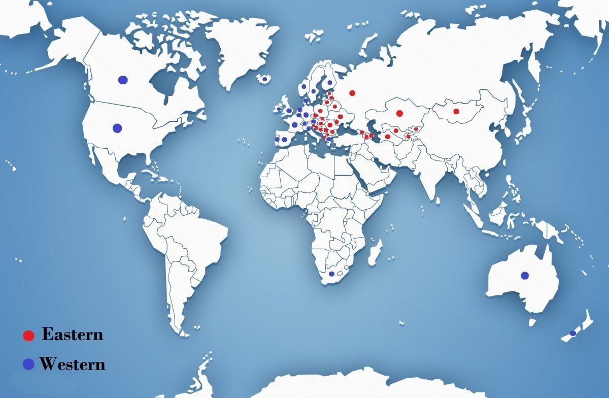
Eastern nations are the ones that extend from Europe to Asia and have been at some point under the influence of the Soviet Union. They are marked in red on the map. Western nations include the Anglosphere and the Western European nations. They are marked in blue on the map.
For the period, we will focus on recent history, from the collapse of the Soviet Union until now. Here are the factors that can influence the success of fighters coming from the “Eastern” group:
1. A stronger “father to son” culture of fighting
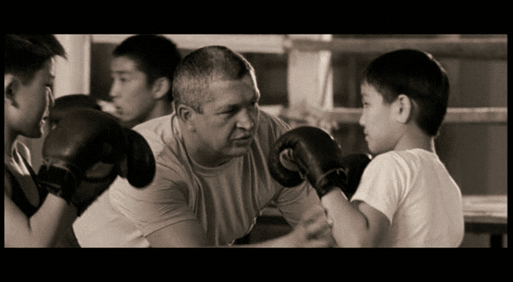
This is where it all starts. Can you remember who introduced you to martial arts? It was my grandfather in my case. My father knows how to scrap but did not teach me. However, I consider myself lucky. If you are from the West, how many of your acquaintances are martial artists and were introduced to it by an older male relative?
It is more common in the Eastern nations. They start younger than us. The father gets his son to the boxing gym so he becomes a man that can defend himself or out of habit because his father did the same. It is in the fabric of their society.
2. An older civilization
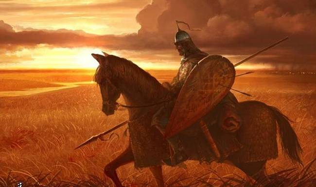
When we take into account the age of young nations such as the USA or Australia and we compare it to entities like Russia or Romania, it is easy to understand why a civilization with traditional fighting styles that had a longer time to develop would produce better martial artists.
But what about countries like the United Kingdom or Germany that also have a deeply rooted martial tradition and are fairly old nations? As we have observed in the last 30 years or so, this whole heritage of martial culture is disappearing with the cultural decline that attacks values linked to masculinity, like the ability to fight well. This is a phenomenon that has not reached (as fast) the Eastern nations.
3. A stronger presence of martial arts in their traditional culture

Every bloody Georgian kid has trained chidaoba and has fought in a sandy arena in the mountains. Every young Mongolian male knows how to wrestle because those are the three things a Mongolian man must know how to do: ride a horse, wrestle, and shoot a bow.
There are simply more martial arts practitioners per capita in the Eastern nations than in the Western ones, hence having a larger chance to see an exceptionally skilled fighter rise among them.
4. A stricter diet
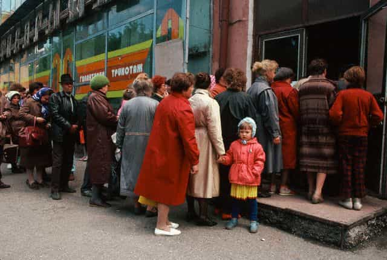
Life in the socialist times was tough and the waiting lines in front of the shops to get food are no invention. They are still very present in the mind of the people.
But the results had to be there regardless. Between two fighters of equal weight that need to reach the same result, with one being underfed and the other one with a good diet available, what makes the difference? Longer hours of training and harder work
5. A larger number of competitive events
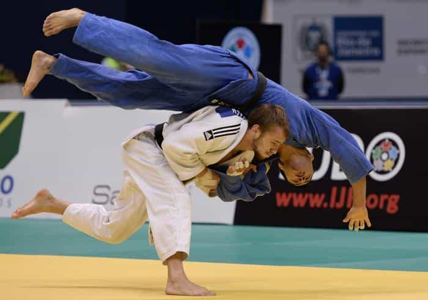
In the Eastern nations, those martial art competitions are everywhere and take place ALL THE TIME. But the difference is that in the West, as you have probably noticed, the goal is to have fun and spar sometimes. Whereas in the East, the focus is brought on full contact and winning trophies.
Imagine how many opponents the champion of Ukraine in judo had to defeat to be where he is, compared to the champion of Spain (with a similar number of inhabitants)?
Compare the medal tables of the following sports: judo, wrestling, and boxing. The Eastern nations are always present in the Top 20. The Soviet Union is usually in the top five, if not leading like in wrestling (with the notable exception of the results of the United States and Great Britain in boxing).
6. A stronger drive
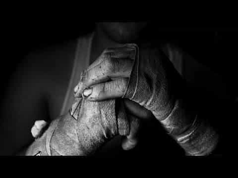
Growing up in those troubled times, young “Eastern” men found solace in the fight. A way to forget about their daily life for a few hours. A way to get out of this misery.
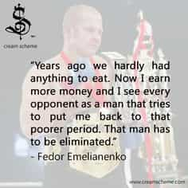
Do you know many Western champions that can say the same?
The mental aspect is different in the Western nations. They see these activities as sports and quite often a hobby. The Eastern nations consider it as an essential element in a man’s life.
7. A greater support of the state
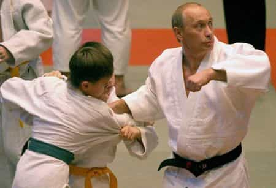
There is an instructional film called “Let’s Learn Judo with Vladimir Putin.” And yes, I have it.
The USSR and its satellites dedicated millions of hours and roubles to reach the top of the martial arts food chain. They still do it now. A martial art like Sambo was first ordered to be experimented with on the battlefields of WWII by Russian military headquarters. The state intervened directly in its development and popularity, creating the perfect “Soviet fighting system.”
When did the U.S.A actively support their young men to fight better and be stronger human beings since the end of the Cold War? Can you think of a “Western” leader that has a background in martial arts?
8. A harsher climate

These Eastern nations are known to be more mountainous and have colder climates. The benefits of winter and mountain training for red blood cells and various other athletic capacities are well documented.
A fighter that has trained for an extended period in the Armenian mountains or the Mongolian steppe will be a tougher organism than a Dutch fighter that spent all his training sessions indoors in Rotterdam.
The counter argument would be that there are Western zones with harsh climates as well. It is true, but do you know many Swedish martial arts champions compared to a small mountainous region such as Chechnya?
9. A poorer system of infrastructure
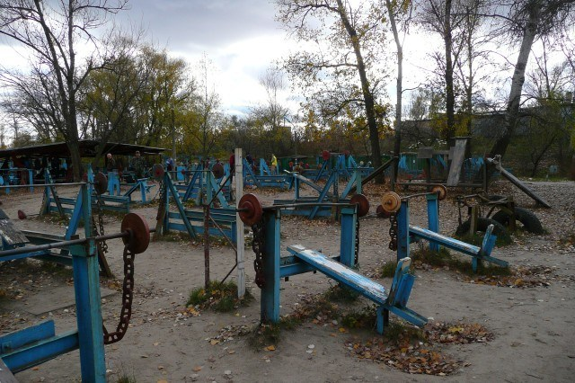
Recent, state of the art gyms and brand new squat racks are a rarity outside of the big cities in the Eastern nations. They are poorer so they have to replace money by ingenuity. Tractor equipment, steel pipes, tree trunks… anything will do.
The feeling of humility that comes with this lack of means cannot really be described. But anyone that has seen a McDojo and a “real” boxing gym will know what I mean.
10. A lesser sense of ethics when victory is at stake
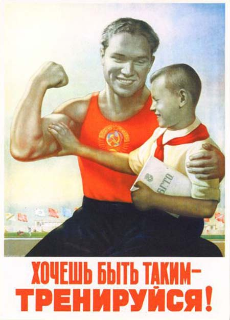
Victory. Victory at all cost. Nothing else matters. “What matters is to take part is what losers say” could have been the motto of more than one Soviet fighting federation. Illegal substances back in the communist times, dirty methods, secret programs… No stone was left unturned to fight and defeat the big evil West during the Cold War. And old habits die hard.
11. A stronger bond between young men
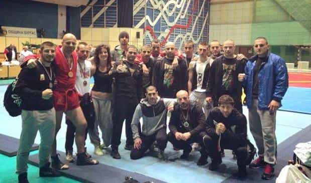
There is a widespread “fighters’ club” culture in the East between wrestlers, boxers, and MMA lads. You always see them going out together, banging the same girls, drinking together. There is a spirit of camaraderie in these Eastern tight-knit communities that I have seldom witnessed in the West.
12. A tougher award system
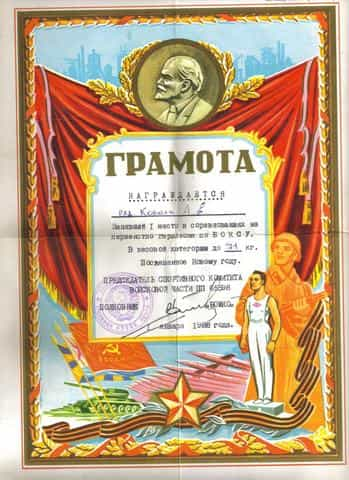
The diplomas and awards in martial arts are not here for show, and not everyone that participates obtains them in the “East.” There is no such thing as a “consolation prize.” It is not the law of “here is a medal because you showed up.”
Merit is key—the competition is everywhere and the expectations are high.
13. A rougher approach to failure

From an early age, the “Easterners” are molded into the frame of always doing better. I never heard, even after years of practice, the words “very good” in an Eastern European coach’s mouth towards the students. And I cannot keep count of the times I heard the words “This is shit” or “Do it better.”
Dimitri the coach will call you a fucking fag if you don’t dodge the punches fast enough. It has two possible outcomes: either you give it up altogether and sulk or you work harder to progress.
Conclusion
I can see the haters coming, guns blazing and calling me names. But the facts are here. I am a Westerner and I say it: the Easterners are generally tougher. The correct response is to see what does not work, and bring our Western fighting culture in the right direction. For every fellow fighter out there, it is a great experience to train in a former USSR gym. You learn a lot and the methods and expectations are radically different.
We have to apply constructive criticism, bring solutions for the present and future generation of Western fighters. Injecting more masculinity and fighting culture in the West, we can reach similar results. Also, Trump and Putin should spar and organize a boxing match with one another
Here is some motivation from the East:
Read More: 13 Martial Artists You Can Draw Inspiration From